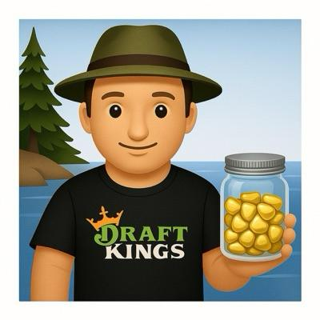

WEEK 10
IS UNWELL.
Best ball. League receipts, matchup chaos, and actual math to back up the slander.
Updated November 17, 2026 at 08:12 AM CT · Verified Sleeper results
4whoresman chose violence
 198.63 points. Weekly high score, 9-0 in all-play, and a fresh invoice for everyone below them.
198.63 points. Weekly high score, 9-0 in all-play, and a fresh invoice for everyone below them.
🏆 Weekly Awardz
Ten managers. Ten different trophies. Data-backed chaos, most dramatic first.
4whoresman
Jumped from #7 to #1 in scoring. Lazarus got the Wi-Fi password.
 Krispy Kremepie
Krispy Kremepie
Down 18.21 points from last week. Iceberg speedrun.
 Fall From Grace
Fall From Grace Lamar hit it, Cam came
Lamar hit it, Cam came
Fell from #3 to #8. The wheels left the group chat.
StinkyButt69
Counted QBs combined for 85.19. Quarterback factory running overtime.
 Wes Mantooth
Wes Mantooth
Scored 152.10 and STILL lost. The universe is farming engagement.
 One-Man Carry Job
One-Man Carry Job docjoff
docjoff
Top scorer contributed 32% of team points. Everybody else rode shotgun.

bingbongtinydong187.96 points. The scoreboard just filed a workers comp claim.
The fighting greeks
4 counted players reached 20+ points. Slot-machine simulator activated.
The Chavenators
Survived by 34.96 points. Their Apple Watch called 911.
 Generational Stinker
Generational Stinker Connecticut Cheddarwurst
Connecticut Cheddarwurst
Scored 125.19. The offense has been reported missing.
State of every bro
Tap your team. Scoreboard first, full receipts underneath.
9-1 Lamar hit it, Cam cameLOSS · 134.02
Match: Lamar hit it, Cam came lost to bingbongtinydong, 134.02–187.96. Opponent had more points. The scoreboard is a ruthless unpaid intern. Top lineup contributors: Isaiah Likely 27.45, Chase Brown 26.30, Tony Pollard 21.90.
Season vibe: #6 in total points with a 9-1 record. This was a #8 weekly score, while your season-long points rank is #6. Scoring-deserved wins: 5.78; actual: 9.
Top automatic best-ball scorers: Isaiah Likely 27.45, Chase Brown 26.30, Tony Pollard 21.90
7-3 StinkyButt69WIN · 183.99
StinkyButt69’s Best-Ball Choir: Two QBs, Three Backs, One Musical Cataclysm
THE FILM ROOM Film-room ledger: StinkyButt69’s auto-lineup detonated for 183.99 points in a WIN over Connecticut Cheddarwurst. Joe Burrow led with 48.66 and Trevor Lawrence supplied 36.53 — the counted QB total was 85.19 — while Bhayshul Tuten chipped 19.55 and counted RBs reached 33.35. WRs provided 57.05 (CeeDee Lamb 18.45, Ryan Flournoy 17.6) and TE only 8.4; top-three share sat at 56.9%.
THE BIGGER CONSPIRACY Conspiracy cutaway: meaningful advanced insight — the counted QB haul (85.19) plus a multi-RB presence turned variance into redundancy. Explanation: having two QBs both in the counted five reduced single-QB dependency while RB depth (Tuten and others) supplied 33.35 points to avoid a classic air-only collapse. Schedule luck -0.56 shows the score didn’t ride cheap matchups; instead, correlation and positional balance carried the day.
NEXT EPISODE Next episode: expect more orchestrated chaos — Burrow and Lawrence keep splitting solos while RB breadth keeps the chorus humming. Savage closer: this team didn’t just win a game, it held a stadium rehearsal and left the opponent asking for refunds.
Top automatic best-ball scorers: Joe Burrow 48.66, Trevor Lawrence 36.53, Bhayshul Tuten 19.55
7-3 The ChavenatorsWIN · 187.06
The Chavenators: Best-Ball Broadway — Dak & Pickens Stole Act One, RB Engine Closed the Curtain
THE FILM ROOM Film-room microdoc: The Chavenators auto-lineup put up 187.06 points in a WIN over Wes Mantooth. Dak Prescott led counted output with 43.67 and George Pickens added 42.75 while C.J. Stroud chipped 23.94 — those three comprise a 59.0% top-three share. Counted positional haul shows QBs 67.61, WRs 70.05 and RBs 45.25; across three weeks the club logged 116.48 → 198.51 → 187.06, a violent uptrend where QB/WR pairing repeatedly outscored RBs.
THE BIGGER CONSPIRACY Conspiracy cutaway: schedule_luck reads 0.33 but the meaningful advanced insight is roster composition — combining two high-output QBs (Dak + Stroud = 67.61 QB points) with elite WRs (Pickens + Drake London fueling 70.05 WR points) created cross-positional reinforcement. In plain metric terms, the top-five delivered 59% of scoring yet that concentration paid off because it covered multiple positions: Dak’s floor and Pickens’ spike reduced lineup variance rather than increasing it.
NEXT EPISODE Next episode: The Chavenators will keep running the QB/WR two-man show while Blake Corum and RB depth supply touchdown insurance; with season points 1,699.33 (rank 2) and 7 actual wins, this cast will keep selling out theaters — savage closer: they staged a Broadway heist and left the critics applauding while the other team counted the receipts.
Top automatic best-ball scorers: Dak Prescott 43.67, George Pickens 42.75, C.J. Stroud 23.94
5-5 4whoresmanWIN · 198.63
Two-QB Buffet Bonsai: 4whoresman Turns a 198.63 Feast Into a Culinary Crime Scene
THE FILM ROOM Film room: 4whoresman’s best-ball auto-lineup detonated 198.63 points in a WEEK 10 WIN over docjoff — Christian McCaffrey led with 47.30 and Jared Goff supplied 34.67 while Matthew Stafford added 26.26; Deebo Samuel Sr. (25.15) and James Cook III (23.70) rounded the scored five. Counted positional output was RB 88.75, QB 60.93, WR 47.05, TE 1.90 and the top-three share sat at 54.5%.
THE BIGGER CONSPIRACY Bigger conspiracy: meaningful insight — RBs supplied 88.75 points, the largest positional haul, so ground-game dominance underwrote this best-ball shelling rather than mere QB stacking. That RB heft insulated the double‑QB approach: when Goff/Stafford combined for 60.93, the durable RB engine turned volatility into a blowout, flipping a +47.71 weekly matchup margin into a coronation.
NEXT EPISODE Next episode: expect more manic upside weeks because the recipe is now proven — elite RB scoring plus two playable QBs equals auto-lineup nuclear options. Savage closer: 4whoresman just hosted a buffet and the league left with chronic indigestion.
Top automatic best-ball scorers: Christian McCaffrey 47.30, Jared Goff 34.67, Matthew Stafford 26.26
5-5 Krispy KremepieLOSS · 132.66
Match: Krispy Kremepie lost to The fighting greeks, 132.66–180.08. Opponent had more points. The scoreboard is a ruthless unpaid intern. Top lineup contributors: Chuba Hubbard 32.95, Justin Herbert 17.76, Garrett Wilson 15.85.
Season vibe: #7 in total points with a 5-5 record. A brutal weekly all-play showing. Redemption arc pending approval. Scoring-deserved wins: 4.33; actual: 5.
Top automatic best-ball scorers: Chuba Hubbard 32.95, Justin Herbert 17.76, Garrett Wilson 15.85
4-6 bingbongtinydongWIN · 187.96
Purdy’s Pocketbook: Bingbongtinydong’s Two-QB Tango Eclipses the Field
THE FILM ROOM Film-room microdoc: bingbongtinydong’s best-ball auto-lineup detonated for 187.96 points, a Week 10 masterclass where Brock Purdy accounted for 52.66 and Parker Washington added 28.45 while Cam Skattebo’s 26.45 RB surge kept the ledger lethal. The counted five supplied 70.71 QB points vs 55.65 WRs and 47.25 RBs — that QB tilt (two counted QBs combining for 70.71) is the mechanical reason auto-lineups often flirt with volatility yet produce massive ceilings.
THE BIGGER CONSPIRACY Conspiracy cutaway: schedule_luck −2.11 suggests the opponent got gifted daylight over the season, but this week’s +53.94 matchup margin converted into an authoritative win despite negative luck. Meaningful advanced insight — top-three share 57.2% means over half the scoring lived in Purdy/Washington/Skattebo; because the counted QBs delivered 70.71 points the auto-lineup ate opponent variance for lunch.
NEXT EPISODE Next episode: bingbongtinydong will keep auto-collecting big QB nights and WR chances; with season points 1,640.36 (third in scoring) and counted composition leaning QB-heavy, expect more blockbuster outputs that read like financial statements — and the final savage line: Purdy cashed the check and the rest of the league’s wallets just bounced.
Top automatic best-ball scorers: Brock Purdy 52.66, Parker Washington 28.45, Cam Skattebo 26.45
4-6 The fighting greeksWIN · 180.08
The fighting greeks: QB fireworks and a WR bailout seal a Week 10 Best-Ball Greek win — and also a tragicomic ledger note
THE FILM ROOM Film room microdoc: The fighting greeks auto-lineup erupted for 180.08 points in a WIN over Krispy Kremepie, with Jahmyr Gibbs (44.45) and Jaxon Smith-Njigba (31.10) shouldering the counted haul while Jayden Daniels (27.01) delivered QB sapience. Counted composition shows RB = 62.05, WR = 62.15, QB = 44.88 and TE = 11.0; top-three share sits at 57.0%, so more than half the week’s value rode three players.
THE BIGGER CONSPIRACY Conspiracy cutaway: schedule_luck −1.56 and a massive weekly matchup margin of +47.42 tell the other side — you weren’t lucky, you were dominant. Meaningful advanced insight: balanced RB/WR counted output (RB 62.05 vs WR 62.15) means the auto-lineup avoided single-positional bankruptcy; when Jahmyr supplied 44.45 the RB floor insulated Jayden Daniels’ QB volatility and JSN amplified the ceiling.
NEXT EPISODE Next episode: keep letting Gibbs, JSN and Daniels act like Greek tragedians who also know how to dunk; with season points 1,629.97 (rank 5) and scoring-deserved-wins 5.56 vs actual wins 4, this roster just bought a one-way ticket out of poetic collapse. Savage closer: you staged a hero’s arc and the chorus finally shut the goddamn front row up.
Top automatic best-ball scorers: Jahmyr Gibbs 44.45, Jaxon Smith-Njigba 31.10, Jayden Daniels 27.01
4-6 Wes MantoothLOSS · 152.10
Wes Mantooth’s QB/WR Tightrope: A 152.10 Loss That Felt Like a Tightrope Walk Over a Circus Pit
THE FILM ROOM Film-room breakdown: Wes Mantooth’s best-ball auto-lineup posted 152.10 and still folded to The Chavenators’ 187.06 — Josh Allen (27.59) and Amon‑Ra St. Brown (24.80) were the counted workhorses while Omarion Hampton (19.25) and DJ Moore (18.40) filled in the gaps. The counted composition leaned WRs (69.01) far ahead of RBs (45.55) and TE (9.95); top-three share 47.1% shows nearly half the week rode on three engines.
THE BIGGER CONSPIRACY Conspiracy cutaway: meaningful advanced insight — WR positional haul of 69.01 outpaced QB (27.59) and RBs combined, meaning the auto-lineup’s ceiling depends on WR correlation across multiple receivers rather than a multi-QB hedge. All-play 4–5 and schedule_luck 0.78 explain the scoreboard: the roster did enough in raw scoring but lost because the opponent produced more across counted spots.
NEXT EPISODE Next episode: Mantooth will keep auditioning high‑ceiling WRs and hope Allen keeps setting off fireworks; with top counted contributors supplying nearly half this week’s points, expect future weeks to be cinematic — either Oscar‑bait or the kind of flop that sells out late-night reviews.
Top automatic best-ball scorers: Josh Allen 27.59, Amon-Ra St. Brown 24.80, Omarion Hampton 19.25
3-7 docjoffLOSS · 150.92
Match: docjoff lost to 4whoresman, 150.92–198.63. Opponent had more points. The scoreboard is a ruthless unpaid intern. Top lineup contributors: Patrick Mahomes 48.67, Emmett Johnson 35.60, Bijan Robinson 16.70.
Season vibe: #10 in total points with a 3-7 record. This was a #7 weekly score, while your season-long points rank is #10. Scoring-deserved wins: 2.56; actual: 3.
Top automatic best-ball scorers: Patrick Mahomes 48.67, Emmett Johnson 35.60, Bijan Robinson 16.70
2-8 Connecticut CheddarwurstLOSS · 125.19
Match: Connecticut Cheddarwurst lost to StinkyButt69, 125.19–183.99. Opponent had more points. The scoreboard is a ruthless unpaid intern. Top lineup contributors: Ja'Marr Chase 34.35, Stefon Diggs 18.80, Quinshon Judkins 15.35.
Season vibe: #9 in total points with a 2-8 record. A brutal weekly all-play showing. Redemption arc pending approval. Scoring-deserved wins: 2.89; actual: 2.
Top automatic best-ball scorers: Ja'Marr Chase 34.35, Stefon Diggs 18.80, Quinshon Judkins 15.35
Week 10 All-Play Record
How many of the other nine teams each manager outscored this week. This is NOT the head-to-head record.
| Rank | Manager | All-play | Week pts |
|---|---|---|---|
| 1 | 4whoresman | 9-0 | 198.63 |
| 2 | bingbongtinydong | 8-1 | 187.96 |
| 3 | The Chavenators | 7-2 | 187.06 |
| 4 | StinkyButt69 | 6-3 | 183.99 |
| 5 | The fighting greeks | 5-4 | 180.08 |
| 6 | Wes Mantooth | 4-5 | 152.10 |
| 7 | docjoff | 3-6 | 150.92 |
| 8 | Lamar hit it, Cam came | 2-7 | 134.02 |
| 9 | Krispy Kremepie | 1-8 | 132.66 |
| 10 | Connecticut Cheddarwurst | 0-9 | 125.19 |
Total Season Lucky Dawg Rankings
Actual minus expected wins. Positive = favorable matchups; negative = brutal scheduling. Every week, 9-0 all-play earns 1 expected win, not 9 actual wins.
Gold = luckiest · Purple = unluckiest · Blue = everyone else. Dot numbers match the table below.
| Rank | Manager | Expected wins | Actual wins | Luck |
|---|---|---|---|---|
| #1 | Lamar hit it, Cam came | 5.78 | 9 | +3.22 |
| #2 | Wes Mantooth | 3.22 | 4 | +0.78 |
| #3 | Krispy Kremepie | 4.33 | 5 | +0.67 |
| #4 | docjoff | 2.56 | 3 | +0.44 |
| #5 | The Chavenators | 6.67 | 7 | +0.33 |
| #6 | 4whoresman | 5.33 | 5 | -0.33 |
| #7 | StinkyButt69 | 7.56 | 7 | -0.56 |
| #8 | Connecticut Cheddarwurst | 2.89 | 2 | -0.89 |
| #9 | The fighting greeks | 5.56 | 4 | -1.56 |
| #10 | bingbongtinydong | 6.11 | 4 | -2.11 |
NFL reality check
Advanced NFL player-game stats are awaiting verification for this week. We do not recycle last week's numbers.
Next week's propaganda
The receipts do not expire
4whoresman has the weekly crown, Connecticut Cheddarwurst needs a bounce-back, and the remaining managers have seven days to manufacture excuses.